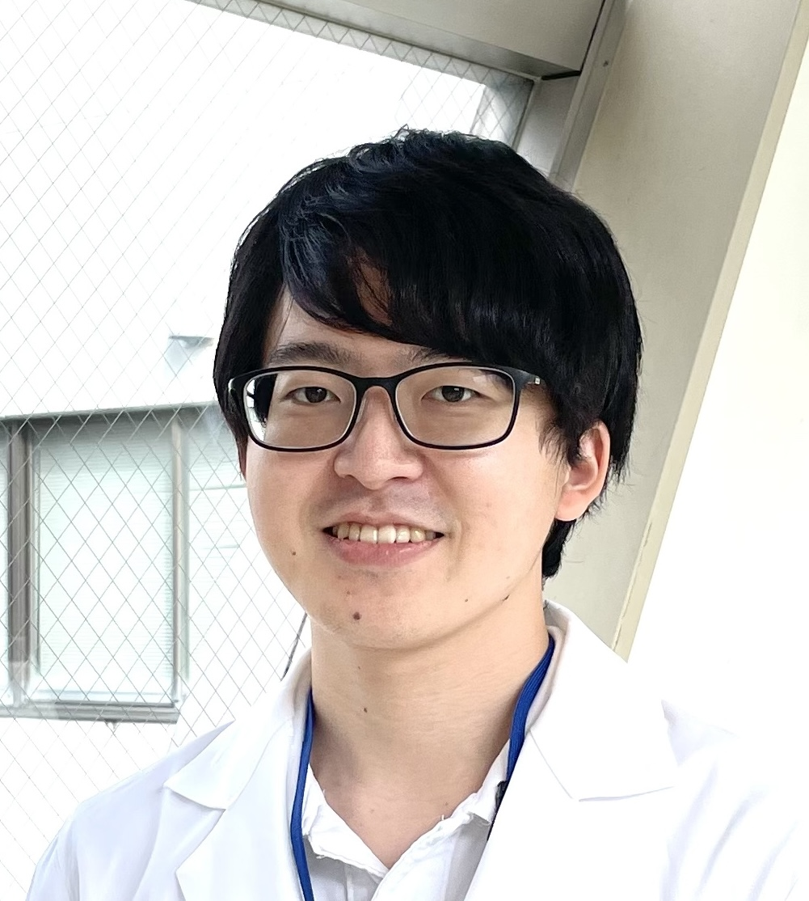
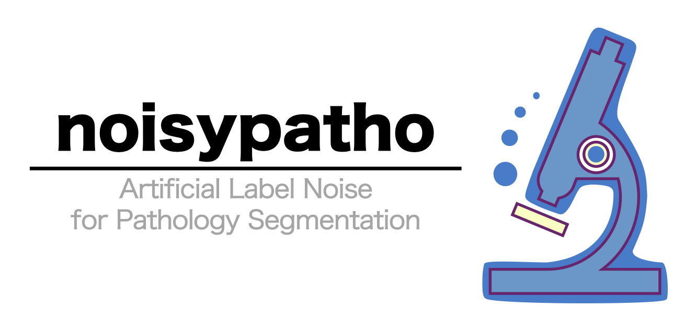

- (Preprint) Harada K (*co-correspondence), Nomura Y, Komura D, Ishikawa S, Sakashita S. Label Noise in Pathological Segmentation is Overlooked, Leading to Potential Overestimation of Artificial Intelligence Models. bioRxiv. 2025. doi: 10.1101/2025.02.18.638843.
- Harada K, Sakamoto N, Kitaoka T, Nakamura Y, Kondo R, Morisue R, Hashimoto H, Yamamoto Y, Ukai S, Maruyama R, Sakashita S, Kojima M, Tanabe K, Ohdan H, Shitara K, Kinoshita T, Ishii G, Yasui W, Ochiai A, Ishikawa S. PI3 expression predicts recurrence after chemotherapy with DNA-damaging drugs in gastric cancer. J Pathol. 2025. doi: 10.1002/path.6400.
- Kitaoka T, Harada K, Sakashita S, Kojima M, Taki T, Kuwata T, Kinoshita T, Futakuchi M, Ishii G, Sakamoto N. Quantification of Gremlin 1 throughout the tumor stroma using whole slide imaging and its clinicopathological significance in gastric cancer. Virchows Arch. 2024. doi: 10.1007/s00428-024-03903-8.
- Morisue R, Kojima M, Suzuki T, Watanabe R, Sakamoto N, Sakashita S, Harada K, Nakai T, Ishii G, Nakatsura T, Gotohda N, Ishikawa S. Common clinicopathological and immunological features of sarcomatoid carcinoma across organs: A histomorphology-based cross-organ study. Int J Cancer. 2023. doi: 10.1002/ijc.34680.
- Harada K, Sakamoto N. Cancer organoid applications to investigate chemotherapy resistance. Front Mol Biosci. 2022. doi: 10.3389/fmolb.2022.1067207.
- Kondo R, Sakamoto N, Harada K, Hashimoto H, Morisue R, Yanagihara K, Kinoshita T, Kojima M, Ishii G. Cancer-associated fibroblast-dependent and -independent invasion of gastric cancer cells. J Cancer Res Clin Oncol. 2023. doi: 10.1007/s00432-022-04484-2.
- (Preprint) Kondo R, Sakamoto N, Harada K, Hashimoto H, Morisue R, Yanagihara K, Kinoshita T, Kojima M, Ishii G. Cancer associated fibroblast-dependent and -independent invasion of cancer cells. Research Square. 2022. doi: 10.21203/rs.3.rs-2148966/v1.
- Taniyama D, Sakamoto N, Takashima T, Takeda M, Pham QT, Ukai S, Maruyama R, Harada K, Babasaki T, Sekino Y, Hayashi T, Sentani K, Pommier Y, Murai J, Yasui W. Prognostic impact of Schlafen 11 in bladder cancer patients treated with platinum-based chemotherapy. Cancer Sci. 2022. doi: 10.1111/cas.15207.
- Harada K, Sakamoto N, Ukai S, Yamamoto Y, Pham QT, Taniyama D, Honma R, Maruyama R, Takashima T, Ota H, Takemoto Y, Tanabe K, Ohdan H, Yasui W. Establishment of oxaliplatin-resistant gastric cancer organoids: importance of myoferlin in the acquisition of oxaliplatin resistance. Gastric Cancer. 2021. doi: 10.1007/s10120-021-01206-4.
- Pham QT, Taniyama D, Akabane S, Harada K, Babasaki T, Sekino Y, Hayashi T, Sakamoto N, Sentani K, Oue N, Yasui W. TDO2 overexpression correlates with poor prognosis, cancer stemness, and resistance to cetuximab in bladder cancer. Cancer Rep (Hoboken). 2021. doi: 10.1002/cnr2.1417.
- Takashima T, Taniyama D, Sakamoto N, Yasumoto M, Asai R, Hattori T, Honma R, Thang PQ, Ukai S, Maruyama R, Harada K, Kuraoka K, Tanabe K, Sasaki AT, Ohdan H, Morii E, Murai J, Yasui W. Schlafen 11 predicts response to platinum-based chemotherapy in gastric cancers. Br J Cancer. 2021. doi: 10.1038/s41416-021-01364-3.
- Ukai S, Sakamoto N, Taniyama D, Harada K, Honma R, Maruyama R, Naka K, Hinoi T, Takakura Y, Shimizu W, Ohdan H, Yasui W. KHDRBS3 promotes multi-drug resistance and anchorage-independent growth in colorectal cancer. Cancer Sci. 2021. doi: 10.1111/cas.14805.
- Ukai S, Honma R, Sakamoto N, Yamamoto Y, Pham QT, Harada K, Takashima T, Taniyama D, Asai R, Fukada K, Naka K, Tanabe K, Ohdan H, Yasui W. Molecular biological analysis of 5-FU-resistant gastric cancer organoids; KHDRBS3 contributes to the attainment of features of cancer stem cell. Oncogene. 2020. doi: 10.1038/s41388-020-01492-9.
原田 健司
Kenji Harada, Ph.D.
Thank you for visiting my website! Please feel free to reach out if you have any questions!

現所属
- 広島大学医学部医学科 (MD-PhDコース) 6年生
- 国立がん研究センター 先端医療開発センター 臨床腫瘍病理分野 研修生
自己紹介
広島大学MD-PhDコースの学生で、病理学の研究を行っています。
広島在住ですが研究の場は国立がん研究センター(柏)にあるため、リモートを活用して人工知能 (AI) 開発や画像解析を中心に研究活動を行っています。
現在に至るまで、胃癌オルガノイドを用いた抗癌剤耐性に関する研究を中心に取り組んできました。
耐性獲得による変化を、in vitro、in vivo、bioinformatics、clinical dataなどを組み合わせて多角的に解析してきました。
現在は、組織の微小環境について、分子生物学的手法に加えて形態学的特徴を合わせて研究したいという考えから、AI開発や画像解析にも取り組んでいます。
興味
- 病理
- オルガノイド
- 腫瘍微小環境
- 機械学習 / 深層学習 / 人工知能 (AI)
- ラベルノイズ
学歴
- 2013年04月-2016年03月, 愛知県立岡崎高等学校
- 2016年04月-現在, 広島大学医学部医学科 (MD-PhDコース)
- 2020年04月-2023年03月, 広島大学大学院医系科学研究科 博士課程
- 2021年04月-現在, 国立がん研究センター先端医療開発センター臨床腫瘍病理分野 研修生
職歴
- 2022年10月-2022年12月, 国立がん研究センター先端医療開発センター 臨床腫瘍病理分野 特任研究補助員
- (2025年04月- 初期研修開始予定)
原著論文
受賞等
- 2023年7月, 特に優れた業績による返還免除(大学院第一種奨学金; 全額), 日本学生支援機構
- 2022年12月, エクセレントスチューデントスカラシップ受賞, 広島大学, 広島, 日本
- 2022年9月29日-10月1日, 日本癌学会若手研究者ポスター賞, 第81回日本癌学会学術総会, 横浜, 日本
- 2022年3月2-4日, ベストポスター賞, 第94回胃癌学会総会, 横浜, 日本 (+Online)
- 2021年10月, 広島大学創発的次世代研究者育成・支援プログラム 次世代フェロー内定, 広島大学
- 2021年9月2-3日, English Presentation Award, 日本組織培養学会第93回大会, 広島, 日本
- 2020年4月6日, 広島大学医学部学生表彰, 広島大学医学部医学科, 広島, 日本
- 2019年7月31日, 令和元年度広島大学医学研究実習最優秀賞, 広島大学医学部医学科, 広島, 日本
学会発表
国際学会
- 【Poster】 Kenji Harada, Naoya Sakamoto, Shoichi Ukai, Tsuyoshi Takashima, Ryota Maruyama, Daiki Taniyama, Kazuaki Tanabe, Hideki Ohdan, Wataru Yasui. Identification of MYOF as a novel biomarker by using oxaliplatin-resistant gastric cancer organoid model. AACR Annual Meeting 2022. New Orleans, USA, Apr. 8-13, 2022.
- 【Poster】 Kenji Harada, Naoya Sakamoto, Shoichi Ukai, Tsuyoshi Takashima, Ryota Maruyama, Daiki Taniyama, Kazuaki Tanabe, Hideki Ohdan, Wataru Yasui. The key function of Myoferlin in L-OHP-resistant gastric cancer organoid. The 10th International Conference of the International Society of Gastroenterological Carcinogenesis. Online, Nov. 26-27, 2021.
国内学会
- 【ポスター】 原田健司, 坂下信悟, 野村祐一郎, 河村大輔, 石川俊平. 病理画像セグメンテーションモデルにおけるラベルノイズの影響. 第113回日本病理学会総会. 名古屋, 2024年3月28-30日.
- 【口頭】 原田健司. オキサリプラチン耐性胃がんオルガノイドを用いた薬剤耐性研究. 第112回日本病理学会総会 (令和4年度日本病理学会100周年記念病理学研究新人賞公開二次審査). 下関, 2023年4月13日.
- 【ポスター】 原田健司, 坂本直也, 小嶋基寛, 鵜飼翔一, 坂下信悟, 田邉和昭, 大段秀樹, 石井源一郎, 安井弥, 落合淳志, 石川俊平. 胃がんオルガノイドを用いた多剤耐性関連分子の同定. 第68回日本病理学会秋特別総会. 盛岡, 2022年11月17-18日.
- 【口頭】 原田健司. 医療AIの波及を目指して-医学生の視点からの報告-. 第1回病理AI実装研究会. オンライン, 2022年10月29日.
- 【口頭+ポスター】 原田健司, 坂本直也, 小嶋基寛, 鵜飼翔一, 田邉和昭, 大段秀樹, 石井源一郎, 安井弥, 落合淳志, 石川俊平. 抗がん剤耐性胃がんオルガノイドを用いた新規多剤耐性関連遺伝子の同定. 第81回日本癌学会学術総会. 横浜, 2022年9月29日-10月1日.
- 【ポスター】 原田健司, 坂本直也, 小嶋基寛, 鵜飼翔一, 田邉和照, 大段秀樹, 石井源一郎, 安井弥, 落合淳志, 石川俊平. 抗がん剤耐性胃がんオルガノイドのトランスクリプトーム解析による新規多剤耐性因子の同定. 第18回日本病理学会カンファレンス. 仙台, 2022年7月29-30日.
- 【ポスター】 原田健司, 坂本直也, 鵜飼翔ー, 谷山大樹, 本間りりの, 丸山諒太, 高島剛志, 田邊和照, 大段秀樹, 安井弥. オキサリプラチン耐性胃癌の新規バイオマーカ及び治療標的の同定. 第111回日本病理学会総会. 神戸, 2022年4月14-16日.
- 【ポスター】 原田健司, 坂本直也, 鵜飼翔一, Quoc Thang Pham, 谷山大樹, 本間りりの, 丸山諒太, 高島剛志, 田邊和照, 大段秀樹, 安井弥. Investigation on the role of MYOF in oxaliplatin-resistant gastric cancer organoids. 第94回胃癌学会総会. 横浜+オンライン, 2022年3月2-4日.
- 【口頭】 原田健司, 坂本直也, 鵜飼翔一, Quoc Thang Pham, 谷山大樹, 本間りりの, 丸山諒太, 高島剛志, 田邊和照, 大段秀樹, 安井弥. L-OHP耐性胃癌オルガノイドにおけるmyoferlinの重要性. 第80回日本癌学会学術総会. 横浜+オンライン, 2021年9月30日-10月2日.
- 【口頭】 Kenji Harada, Naoya Sakamoto, Shoichi Ukai, Quoc Thang Pham, Daiki Taniyama, Ririno Honma, Ryota Maruyama, Tsuyoshi Takashima, Kazuaki Tanabe, Hideki Ohdan, Wataru Yasui. Key role of myoferlin in L-OHP-resistant gastric cancer organoids. 日本組織培養学会第93回大会. 広島, 2021年9月2-3日.
- 【口頭】 原田健司, 坂本直也, 鵜飼翔ー, 高島剛志, 丸山諒太, 谷山大樹, 田邊和照, 大段秀樹, 大上直秀, 安井弥. オキサリプラチン耐性胃癌オルガノイドにおけるMYOFの機能解析. 第110回日本病理学会総会. 東京, 2021年4月22日-24日.
- 【口頭】 原田健司, 坂本直也, 鵜飼翔ー, Quoc Thang Pham, 高島剛志, 丸山諒太, 本間りりの, 谷山大樹, 田邊和照, 大段秀樹, 安井弥. オキサリプラチン耐性胃癌オルガノイドの樹立及びその機能的解析. 第93回日本胃癌学会総会. オンライン, 2021年3月3日-4月9日.
- 【ポスター】 原田健司, 坂本直也, 鵜飼翔ー, Quoc Thang Pham, 高島剛志, 丸山諒太, 本間りりの, 谷山大樹, 田邊和照, 大段秀樹, 安井弥. Establishment and gene expression analysis of L-OHP resistant gastric cancer organoids. 第79回日本癌学会学術総会. 広島+オンライン, 2020年10月1-31日.
- 【ポスター】 原田健司, 坂本直也, 鵜飼翔一, 高島剛志, 丸山諒太, 本間りりの, 谷山大樹, 安井弥. オキサリプラチン耐性胃がんオルガノイドの樹立及びその機能解析. 第109回日本病理学会総会. オンライン, 2020年7月1-31日.
ソフトウェア
-
noisypatho: Create Noisy Annotations for Pathological Semantic Segmentation Data
Link: https://github.com/kenjhara/noisypatho

インターンシップ等
- 2024年01月15日-2024年09月30日, 機械学習エンジニア (インターン), エルピクセル株式会社
- 2021年10月01日-2023年03月31日, 次世代フェロー, 広島大学
- 2020年06月01日-2021年03月23日, クォリファイド・ティーチング・アシスタント, 広島大学
学術貢献活動
Reviewer
- 2023- Reviewer for Histopathology
- 2023- Reviewer for Cancer Science
- 2022- Reviewer for Cancer Medicine
学会関連
- 2024年03月28日: 第113回日本病理学会総会コンパニオンミーティング 企画運営
- 2023年-現在: 病理AI実装研究会学生支部 代表